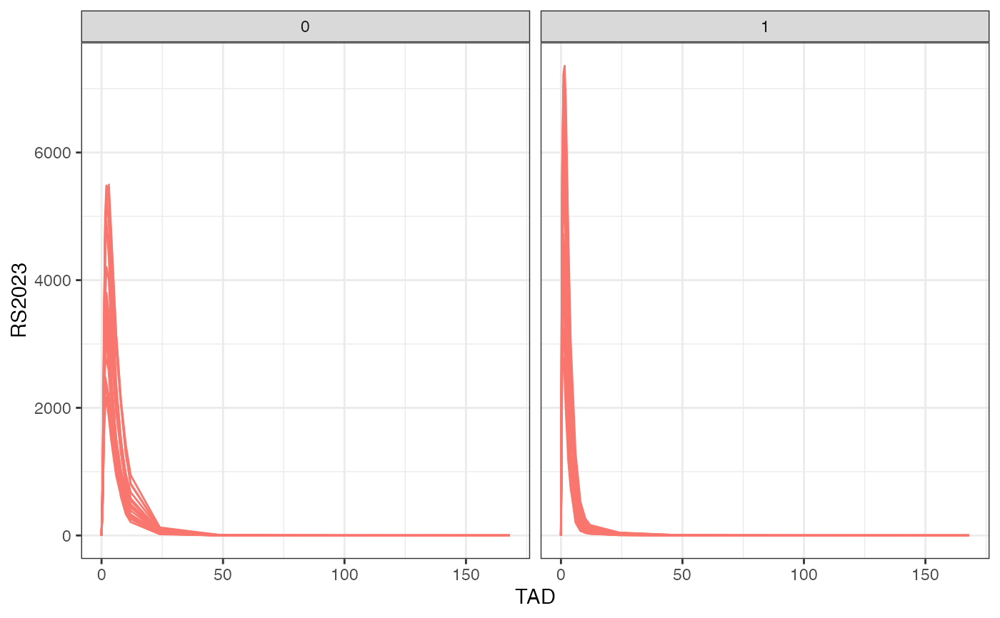
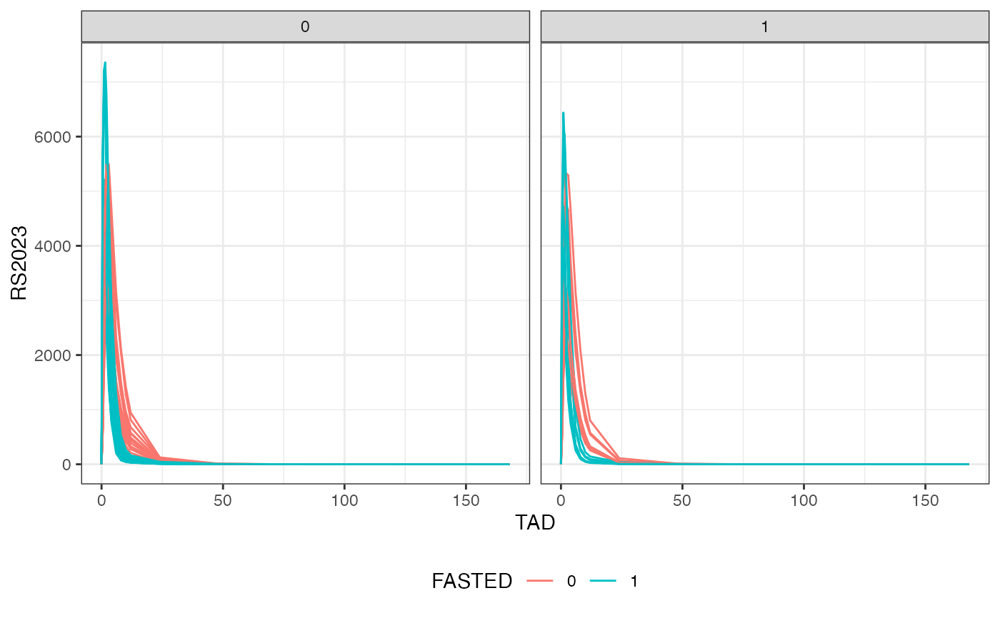
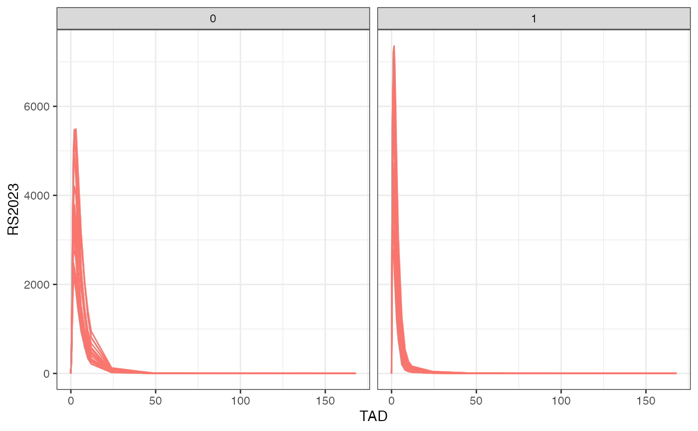
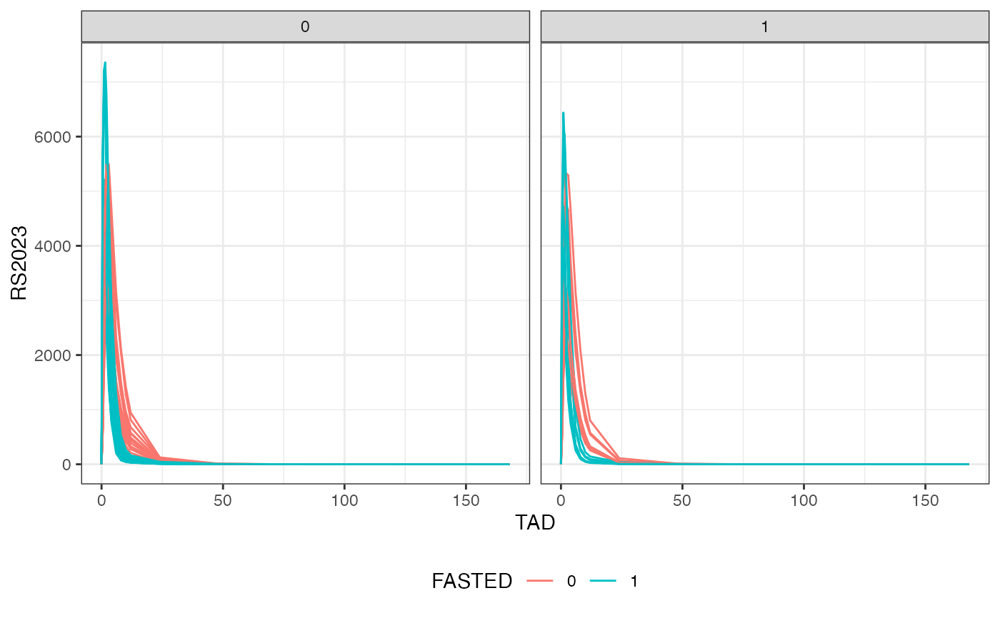
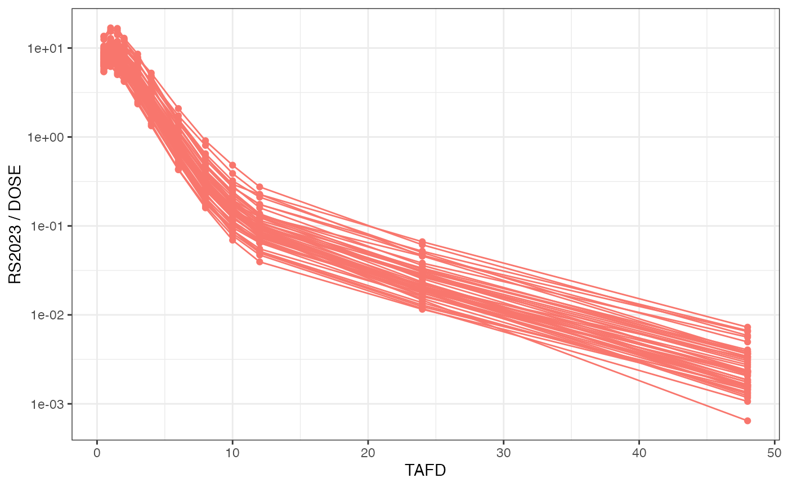
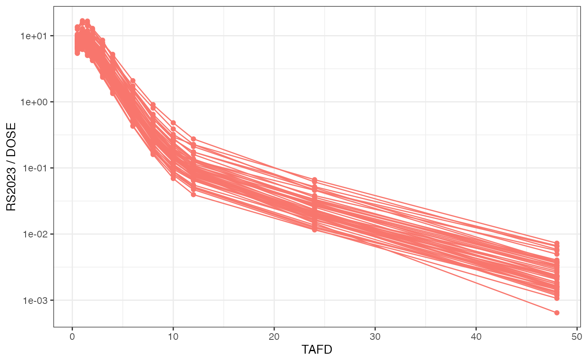
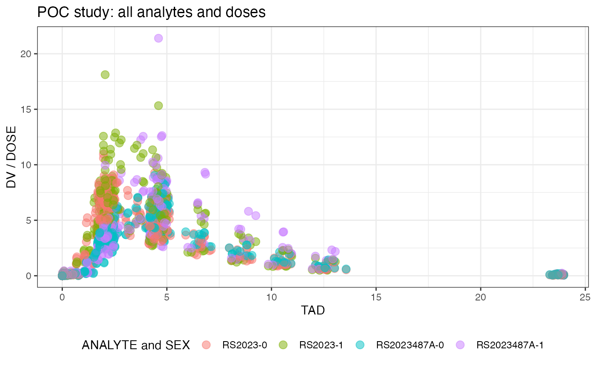
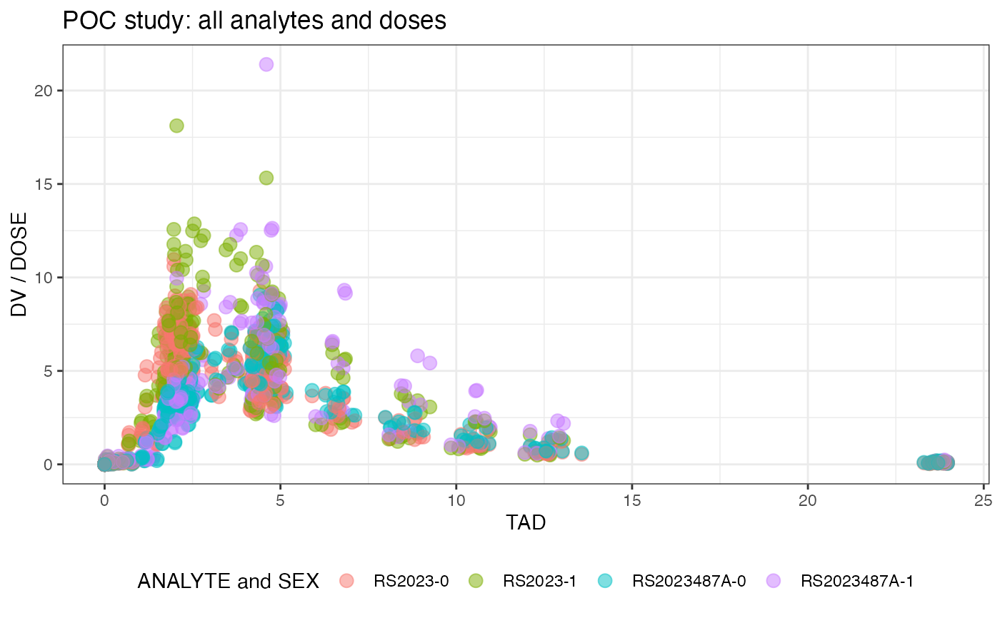

Plot nif object.
Usage
# S3 method for nif
plot(
x,
analyte = NULL,
dose = NULL,
log = FALSE,
time = "TAFD",
group = NULL,
min_time = NULL,
max_time = NULL,
points = FALSE,
lines = TRUE,
admin = NULL,
cfb = FALSE,
summary_function = median,
mean = FALSE,
title = "",
caption = "",
integrate_predose = TRUE,
legend = TRUE,
show_n = FALSE,
shading = TRUE,
silent = deprecated(),
dose_norm = FALSE,
...
)Arguments
- x
A nif object.
- analyte
The analyte as character.
- dose
The dose as numeric.
- log
Logarithmic y scale
- time
The time field to use, as character. Can be 'TIME', 'NTIME', 'TAFD' or 'TAD'.
- group
The grouping variable as character.
- min_time
The minimal time as numeric.
- max_time
The maximal time as numeric.
- points
Show data points as logical.
- lines
Show lines as logical.
- admin
Show vertical lines for administrations, as logical.
- cfb
Show change from baseline, as logical.
- summary_function
The summarizing function to apply to multiple baseline values.
- mean
Show a mean plot, as logical.
- title
The plot title as character.
- caption
The plot caption line as character.
- integrate_predose
Complete 'DOSE' field for predose values.
- legend
Show legend, as logical.
- show_n
Show sample size in mean plot, as logical. Does currently not implement grouping!
![[Experimental]](figures/lifecycle-experimental.svg)
- shading
Show ribbons when mean = TRUE, as logical.
- silent
![[Deprecated]](figures/lifecycle-deprecated.svg) Dummy option for
compatibility, set the global option
Dummy option for
compatibility, set the global option nif_option()withsilent = TRUEto suppress messages.- dose_norm
Dose-normalized exposure, as logical.
- ...
Further graphical parameters for
geom_point().
Details
A watermark can be added by setting the global option 'watermark', e.g.,
nif_option(watermark = "text").
Examples
plot(examplinib_fe_nif, points = TRUE)
#> Warning: Removed 20 rows containing missing values or values outside the scale range
#> (`geom_line()`).
 plot(examplinib_fe_nif, nominal_time = TRUE, group = "FASTED")
#> Warning: Removed 40 rows containing missing values or values outside the scale range
#> (`geom_line()`).

plot(examplinib_sad_nif, mean = TRUE, max_time = 24, show_n = TRUE)

plot(examplinib_poc_nif, analyte="RS2023", admin = TRUE)
#> Warning: Removed 157 rows containing missing values or values outside the scale range
#> (`geom_line()`).
plot(examplinib_fe_nif, nominal_time = TRUE, group = "FASTED")
#> Warning: Removed 40 rows containing missing values or values outside the scale range
#> (`geom_line()`).

plot(examplinib_sad_nif, mean = TRUE, max_time = 24, show_n = TRUE)

plot(examplinib_poc_nif, analyte="RS2023", admin = TRUE)
#> Warning: Removed 157 rows containing missing values or values outside the scale range
#> (`geom_line()`).
 plot(examplinib_poc_nif, analyte="RS2023", time = "NTIME",
group = "SEX", points = TRUE, lines = FALSE)

plot(examplinib_poc_nif, analyte="RS2023", time = "TAD",
dose = 500, log = FALSE, points = TRUE, lines = FALSE)
plot(examplinib_poc_nif, analyte="RS2023", time = "NTIME",
group = "SEX", points = TRUE, lines = FALSE)

plot(examplinib_poc_nif, analyte="RS2023", time = "TAD",
dose = 500, log = FALSE, points = TRUE, lines = FALSE)
 plot(examplinib_poc_min_nif, dose = 500, cmt = 2)

plot(examplinib_fe_nif, mean = TRUE, group = "FASTED", max_time = 24)
plot(examplinib_poc_min_nif, dose = 500, cmt = 2)

plot(examplinib_fe_nif, mean = TRUE, group = "FASTED", max_time = 24)